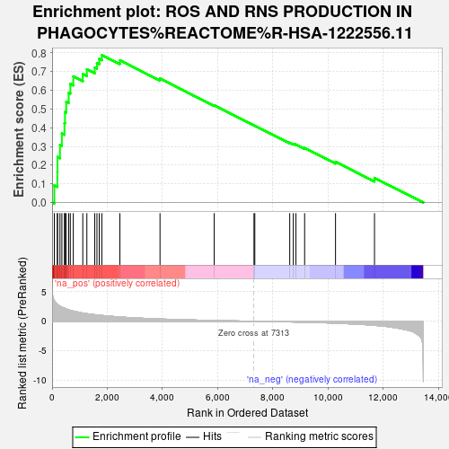
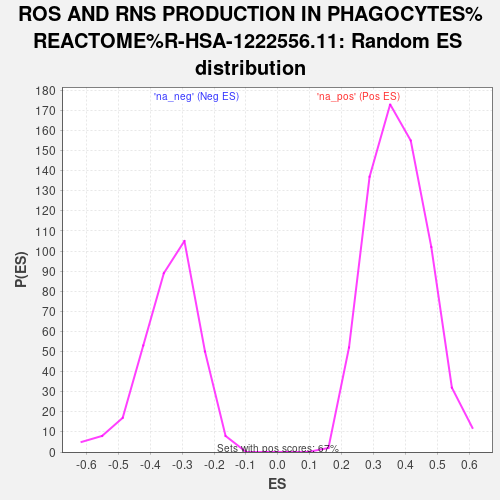

| | | Dataset | ranked_list_female |
| Phenotype | NoPhenotypeAvailable |
| Upregulated in class | na_pos |
| GeneSet | ROS AND RNS PRODUCTION IN PHAGOCYTES%REACTOME%R-HSA-1222556.11 |
| Enrichment Score (ES) | 0.78899425 |
| Normalized Enrichment Score (NES) | 2.0893414 |
| Nominal p-value | 0.0 |
| FDR q-value | 3.7686282E-4 |
| FWER p-Value | 0.003 |
Table: GSEA Results Summary

Fig 1: Enrichment plot: ROS AND RNS PRODUCTION IN PHAGOCYTES%REACTOME%R-HSA-1222556.11
Profile of the Running ES Score & Positions of GeneSet Members on the Rank Ordered List

Fig 2: ROS AND RNS PRODUCTION IN PHAGOCYTES%REACTOME%R-HSA-1222556.11: Random ES distribution
Gene set null distribution of ES for ROS AND RNS PRODUCTION IN PHAGOCYTES%REACTOME%R-HSA-1222556.11